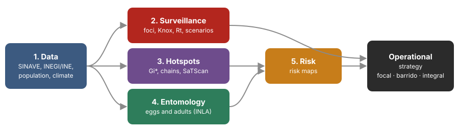
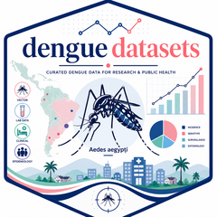
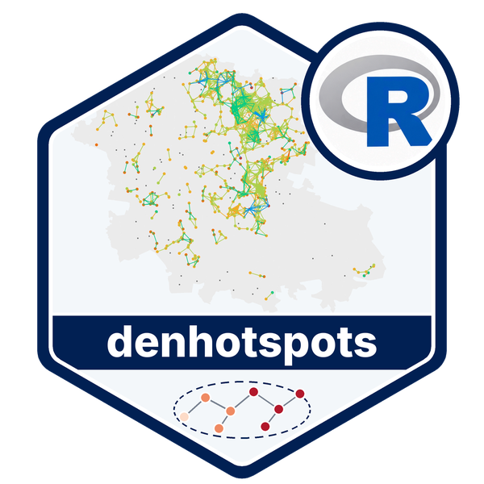
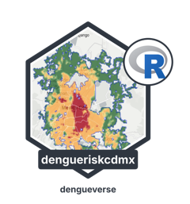

dengueverse
R and Python packages for the analysis of dengue transmission and the operational decisions of the dengue prevention and control program in Mexico.
In R, a universe is a collection of packages that share a philosophy and a common goal, such as the tidyverse, tidymodels, the pharmaverse or the epiverse. The dengueverse is the collection of packages that supports the statistical analysis and data science of the dengue prevention and control program, and provides the basis for designing, implementing, scaling up and evaluating a strategic model to target dengue control in the urban and metropolitan areas of Mexico.
The original raw material of the dengueverse is the epidemiological surveillance dataset of the National Epidemiological Surveillance System (SINAVE) and the entomological surveillance dataset of the Integrated Vector Monitoring System (SIMV). The dengueverse is growing both in inputs (vector control actions, climate, demographic and anthropogenic data) and in languages, with Python versions of its packages.
Workflow
The packages follow the workflow of the program: from the data to the operational strategy.

Packages
1 Data: surveillance, geographic boundaries, population and climate.

rgeomex-py
Geographic boundaries of Mexico (states, municipalities, localities, AGEB, blocks and electoral sections) from INEGI 2019 and INE 2020.

denguedatasets
Open-access dengue surveillance and climate datasets from eleven countries, for research and machine learning.
2 Surveillance: exploratory analysis, active transmission foci and epidemiological scenarios.
vectoRcontrol
Exploratory analysis of the vector control datasets of the Ministry of Health of Mexico.
3 Hotspots and space-time analysis: where transmission persists.

denhotspots
Persistent transmission hotspots (Getis-Ord Gi*, Hi), space-time analysis (Knox, SaTScan, transmission chains) and log-Gaussian Cox processes.
4 Entomology: vector density where it was not measured.
5 Risk: transmission risk maps.

dengueriskcdmx
Data, rasters and code of the dengue transmission risk map of the Mexico City Metropolitan Area.
The SINAVE datasets are for the exclusive use of the staff of the State Ministries of Health and of the federal level. The examples of the packages never publish case locations.